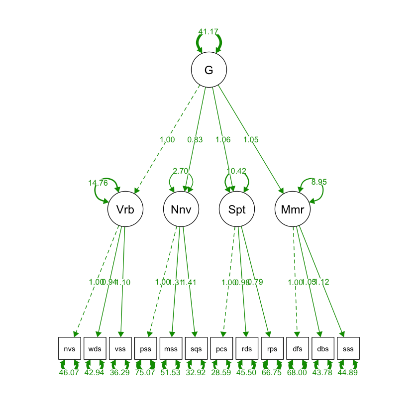

Load libraries
library(haven)
library(psych)
library(tidyverse)
library(lavaan)
library(semTools)
library(manymome)Multiple Regression and Beyond (3e) by Timothy Z. Keith
library(haven)
library(psych)
library(tidyverse)
library(lavaan)
library(semTools)
library(manymome)# MODEL:
# Gc by namevoc worddef verbsim;
# Gf BY pictsim matrix seqquant;
# Gv BY pattcon redesign repict;
# Gsm BY Digits digback seqord;
library(haven)
das2 <- read_sav("data/chap 16 CFA 1/das 2 cov.sav")
library(lavaan)
das2cov <- das2[1:12, 3:14] |>
as.matrix() |>
lav_matrix_vechr(diagonal = TRUE) |>
getCov(names = c("wdss", "vsss", "sqss", "soss", "rpss", "rdss", "psss", "pcss", "nvss", "mass", "dfss", "dbss"))
das2cov |> print() wdss vsss sqss soss rpss rdss psss pcss nvss mass dfss dbss
wdss 92 58 42 50 28 31 37 37 54 42 44 42
vsss 58 104 53 55 36 44 42 49 60 48 52 51
sqss 42 53 94 54 44 50 39 54 44 60 47 53
soss 50 55 54 113 40 48 37 49 52 55 62 63
rpss 28 36 44 40 102 48 34 41 34 40 33 38
rdss 31 44 50 48 48 100 41 56 44 41 46 47
psss 37 42 39 37 34 41 106 39 39 39 37 37
pcss 37 49 54 49 41 56 39 85 47 47 44 48
nvss 54 60 44 52 34 44 39 47 102 40 50 43
mass 42 48 60 55 40 41 39 47 40 105 40 51
dfss 44 52 47 62 33 46 37 44 50 40 122 56
dbss 42 51 53 63 38 47 37 48 43 51 56 103# Confirmatory Factor Analysis
das2_model <- '
Verbal =~ nvss + wdss + vsss
Nonverbal =~ psss + mass + sqss
Spatial =~ pcss + rdss + rpss
Memory =~ dfss + dbss + soss
'
fit <- sem(das2_model,
sample.cov = das2cov,
sample.nobs = 800,
sample.cov.rescale = FALSE)
summary(fit, standardized = TRUE, fit.measures = TRUE) |> print()lavaan 0.6-18 ended normally after 163 iterations
Estimator ML
Optimization method NLMINB
Number of model parameters 30
Number of observations 800
Model Test User Model:
Test statistic 127.986
Degrees of freedom 48
P-value (Chi-square) 0.000
Model Test Baseline Model:
Test statistic 4335.087
Degrees of freedom 66
P-value 0.000
User Model versus Baseline Model:
Comparative Fit Index (CFI) 0.981
Tucker-Lewis Index (TLI) 0.974
Loglikelihood and Information Criteria:
Loglikelihood user model (H0) -33714.571
Loglikelihood unrestricted model (H1) -33650.578
Akaike (AIC) 67489.142
Bayesian (BIC) 67629.680
Sample-size adjusted Bayesian (SABIC) 67534.413
Root Mean Square Error of Approximation:
RMSEA 0.046
90 Percent confidence interval - lower 0.036
90 Percent confidence interval - upper 0.055
P-value H_0: RMSEA <= 0.050 0.762
P-value H_0: RMSEA >= 0.080 0.000
Standardized Root Mean Square Residual:
SRMR 0.027
Parameter Estimates:
Standard errors Standard
Information Expected
Information saturated (h1) model Structured
Latent Variables:
Estimate Std.Err z-value P(>|z|) Std.lv Std.all
Verbal =~
nvss 1.000 7.468 0.739
wdss 0.942 0.049 19.266 0.000 7.034 0.733
vsss 1.100 0.053 20.900 0.000 8.212 0.805
Nonverbal =~
psss 1.000 5.574 0.541
mass 1.306 0.093 14.104 0.000 7.278 0.710
sqss 1.406 0.094 15.030 0.000 7.836 0.808
Spatial =~
pcss 1.000 7.503 0.814
rdss 0.982 0.047 20.996 0.000 7.370 0.737
rpss 0.795 0.049 16.388 0.000 5.964 0.591
Memory =~
dfss 1.000 7.392 0.669
dbss 1.035 0.058 17.961 0.000 7.647 0.754
soss 1.119 0.061 18.392 0.000 8.270 0.778
Covariances:
Estimate Std.Err z-value P(>|z|) Std.lv Std.all
Verbal ~~
Nonverbal 33.506 3.081 10.875 0.000 0.805 0.805
Spatial 42.080 3.287 12.801 0.000 0.751 0.751
Memory 45.485 3.695 12.309 0.000 0.824 0.824
Nonverbal ~~
Spatial 37.314 3.206 11.638 0.000 0.892 0.892
Memory 35.274 3.289 10.724 0.000 0.856 0.856
Spatial ~~
Memory 44.929 3.543 12.680 0.000 0.810 0.810
Variances:
Estimate Std.Err z-value P(>|z|) Std.lv Std.all
.nvss 46.227 2.927 15.793 0.000 46.227 0.453
.wdss 42.525 2.666 15.949 0.000 42.525 0.462
.vsss 36.566 2.712 13.482 0.000 36.566 0.352
.psss 74.932 4.005 18.711 0.000 74.932 0.707
.mass 52.038 3.124 16.657 0.000 52.038 0.496
.sqss 32.594 2.478 13.154 0.000 32.594 0.347
.pcss 28.699 2.243 12.794 0.000 28.699 0.338
.rdss 45.685 2.890 15.808 0.000 45.685 0.457
.rpss 66.426 3.654 18.177 0.000 66.426 0.651
.dfss 67.359 3.902 17.263 0.000 67.359 0.552
.dbss 44.517 2.883 15.440 0.000 44.517 0.432
.soss 44.611 3.054 14.609 0.000 44.611 0.395
Verbal 55.773 4.888 11.410 0.000 1.000 1.000
Nonverbal 31.068 4.007 7.754 0.000 1.000 1.000
Spatial 56.301 4.356 12.925 0.000 1.000 1.000
Memory 54.641 5.454 10.018 0.000 1.000 1.000
# implied covariance/correlation matrix
fitted(fit) |> # covaricance matrix
print()$cov
nvss wdss vsss psss mass sqss pcss rdss rpss
nvss 102.000
wdss 52.530 92.000
vsss 61.327 57.761 104.000
psss 33.506 31.558 36.843 106.000
mass 43.747 41.203 48.103 40.564 105.000
sqss 47.105 44.366 51.796 43.678 57.028 94.000
pcss 42.080 39.633 46.271 37.314 48.719 52.458 85.000
rdss 41.331 38.928 45.447 36.650 47.852 51.525 55.299 100.000
rpss 33.449 31.504 36.780 29.661 38.726 41.699 44.754 43.957 102.000
dfss 45.485 42.840 50.015 35.274 46.056 49.591 44.929 44.129 35.714
dbss 47.057 44.321 51.743 36.493 47.647 51.305 46.482 45.654 36.948
soss 50.886 47.927 55.954 39.463 51.525 55.480 50.264 49.369 39.955
dfss dbss soss
nvss
wdss
vsss
psss
mass
sqss
pcss
rdss
rpss
dfss 122.000
dbss 56.530 103.000
soss 61.130 63.242 113.000
lavInspect(fit, add.labels = TRUE, "cor.ov") |> # correlation matrix
print() nvss wdss vsss psss mass sqss pcss rdss rpss dfss dbss soss
nvss 1.000
wdss 0.542 1.000
vsss 0.595 0.591 1.000
psss 0.322 0.320 0.351 1.000
mass 0.423 0.419 0.460 0.384 1.000
sqss 0.481 0.477 0.524 0.438 0.574 1.000
pcss 0.452 0.448 0.492 0.393 0.516 0.587 1.000
rdss 0.409 0.406 0.446 0.356 0.467 0.531 0.600 1.000
rpss 0.328 0.325 0.357 0.285 0.374 0.426 0.481 0.435 1.000
dfss 0.408 0.404 0.444 0.310 0.407 0.463 0.441 0.400 0.320 1.000
dbss 0.459 0.455 0.500 0.349 0.458 0.521 0.497 0.450 0.360 0.504 1.000
soss 0.474 0.470 0.516 0.361 0.473 0.538 0.513 0.464 0.372 0.521 0.586 1.000lavResiduals(fit, type = "raw", summary = F)
lavResiduals(fit, type = "standardized.mplus", zstat = F, summary = F)
lavResiduals(fit, type = "normalized", zstat = F, summary = F)
lavResiduals(fit, type = "cor.bollen", zstat = F, summary = F)
lavResiduals(fit, type = "cor.bentler", zstat = F, summary = F) # defaultlavResiduals(fit, type = "raw", summary = F) |> print()$type
[1] "raw"
$cov
nvss wdss vsss psss mass sqss pcss rdss rpss dfss
nvss 0.000
wdss 1.470 0.000
vsss -1.327 0.239 0.000
psss 5.494 5.442 5.157 0.000
mass -3.747 0.797 -0.103 -1.564 0.000
sqss -3.105 -2.366 1.204 -4.678 2.972 0.000
pcss 4.920 -2.633 2.729 1.686 -1.719 1.542 0.000
rdss 2.669 -7.928 -1.447 4.350 -6.852 -1.525 0.701 0.000
rpss 0.551 -3.504 -0.780 4.339 1.274 2.301 -3.754 4.043 0.000
dfss 4.515 1.160 1.985 1.726 -6.056 -2.591 -0.929 1.871 -2.714 0.000
dbss -4.057 -2.321 -0.743 0.507 3.353 1.695 1.518 1.346 1.052 -0.530
soss 1.114 2.073 -0.954 -2.463 3.475 -1.480 -1.264 -1.369 0.045 0.870
dbss soss
nvss
wdss
vsss
psss
mass
sqss
pcss
rdss
rpss
dfss
dbss 0.000
soss -0.242 0.000
$cov.z
nvss wdss vsss psss mass sqss pcss rdss rpss dfss
nvss 0.000
wdss 1.319 0.000
vsss -1.679 0.298 0.000
psss 2.335 2.371 2.369 0.000
mass -2.044 0.436 -0.063 -0.825 0.000
sqss -2.148 -1.658 0.961 -3.801 3.887 0.000
pcss 3.200 -1.869 2.113 1.010 -1.427 1.778 0.000
rdss 1.391 -4.417 -0.875 2.023 -4.363 -1.315 1.162 0.000
rpss 0.240 -1.566 -0.369 1.729 0.606 1.418 -3.798 2.472 0.000
dfss 2.114 0.568 1.044 0.651 -2.861 -1.546 -0.545 0.868 -1.052 0.000
dbss -2.430 -1.423 -0.512 0.236 1.953 1.292 1.155 0.798 0.500 -0.373
soss 0.668 1.272 -0.674 -1.127 2.015 -1.177 -0.990 -0.817 0.021 0.635
dbss soss
nvss
wdss
vsss
psss
mass
sqss
pcss
rdss
rpss
dfss
dbss 0.000
soss -0.274 0.000
# modification indices
modindices(fit, sort = TRUE, maximum.number = 8) |> print() lhs op rhs mi epc sepc.lv sepc.all sepc.nox
109 mass ~~ sqss 17.701 12.627 12.627 0.307 0.307
48 Nonverbal =~ rdss 14.845 -1.191 -6.639 -0.664 -0.664
54 Spatial =~ wdss 14.410 -0.320 -2.401 -0.250 -0.250
57 Spatial =~ mass 13.497 -0.725 -5.440 -0.531 -0.531
102 psss ~~ sqss 13.490 -8.804 -8.804 -0.178 -0.178
35 Verbal =~ psss 12.725 0.396 2.958 0.287 0.287
123 pcss ~~ rpss 12.675 -8.047 -8.047 -0.184 -0.184
111 mass ~~ rdss 11.561 -7.259 -7.259 -0.149 -0.149## cross-loadings
das2_model_crossload <- "
Verbal =~ nvss + wdss + vsss
Nonverbal =~ psss + mass + sqss
Spatial =~ pcss + rdss + rpss
Memory =~ dfss + dbss + soss + rdss
"
fit2 <- sem(das2_model_crossload,
sample.cov = das2cov,
sample.nobs = 800,
sample.cov.rescale = FALSE
)
summary(fit2, standardized = TRUE, fit.measures = TRUE, rsquare = TRUE) |> print()lavaan 0.6-18 ended normally after 167 iterations
Estimator ML
Optimization method NLMINB
Number of model parameters 31
Number of observations 800
Model Test User Model:
Test statistic 127.495
Degrees of freedom 47
P-value (Chi-square) 0.000
Model Test Baseline Model:
Test statistic 4335.087
Degrees of freedom 66
P-value 0.000
User Model versus Baseline Model:
Comparative Fit Index (CFI) 0.981
Tucker-Lewis Index (TLI) 0.974
Loglikelihood and Information Criteria:
Loglikelihood user model (H0) -33714.325
Loglikelihood unrestricted model (H1) -33650.578
Akaike (AIC) 67490.650
Bayesian (BIC) 67635.873
Sample-size adjusted Bayesian (SABIC) 67537.431
Root Mean Square Error of Approximation:
RMSEA 0.046
90 Percent confidence interval - lower 0.037
90 Percent confidence interval - upper 0.056
P-value H_0: RMSEA <= 0.050 0.725
P-value H_0: RMSEA >= 0.080 0.000
Standardized Root Mean Square Residual:
SRMR 0.027
Parameter Estimates:
Standard errors Standard
Information Expected
Information saturated (h1) model Structured
Latent Variables:
Estimate Std.Err z-value P(>|z|) Std.lv Std.all
Verbal =~
nvss 1.000 7.467 0.739
wdss 0.942 0.049 19.268 0.000 7.036 0.734
vsss 1.100 0.053 20.895 0.000 8.212 0.805
Nonverbal =~
psss 1.000 5.575 0.542
mass 1.305 0.093 14.105 0.000 7.278 0.710
sqss 1.405 0.094 15.030 0.000 7.835 0.808
Spatial =~
pcss 1.000 7.463 0.809
rdss 1.066 0.143 7.457 0.000 7.952 0.795
rpss 0.799 0.049 16.365 0.000 5.963 0.590
Memory =~
dfss 1.000 7.383 0.668
dbss 1.035 0.058 17.941 0.000 7.643 0.753
soss 1.119 0.061 18.372 0.000 8.264 0.777
rdss -0.085 0.134 -0.631 0.528 -0.626 -0.063
Covariances:
Estimate Std.Err z-value P(>|z|) Std.lv Std.all
Verbal ~~
Nonverbal 33.510 3.081 10.876 0.000 0.805 0.805
Spatial 42.067 3.282 12.818 0.000 0.755 0.755
Memory 45.506 3.696 12.312 0.000 0.825 0.825
Nonverbal ~~
Spatial 37.195 3.200 11.624 0.000 0.894 0.894
Memory 35.316 3.292 10.729 0.000 0.858 0.858
Spatial ~~
Memory 45.169 3.570 12.654 0.000 0.820 0.820
Variances:
Estimate Std.Err z-value P(>|z|) Std.lv Std.all
.nvss 46.249 2.928 15.797 0.000 46.249 0.453
.wdss 42.499 2.665 15.945 0.000 42.499 0.462
.vsss 36.570 2.712 13.484 0.000 36.570 0.352
.psss 74.917 4.004 18.708 0.000 74.917 0.707
.mass 52.035 3.125 16.652 0.000 52.035 0.496
.sqss 32.612 2.479 13.153 0.000 32.612 0.347
.pcss 29.301 2.478 11.822 0.000 29.301 0.345
.rdss 44.524 3.437 12.953 0.000 44.524 0.445
.rpss 66.445 3.659 18.160 0.000 66.445 0.651
.dfss 67.491 3.905 17.285 0.000 67.491 0.553
.dbss 44.584 2.883 15.466 0.000 44.584 0.433
.soss 44.703 3.053 14.643 0.000 44.703 0.396
Verbal 55.751 4.887 11.407 0.000 1.000 1.000
Nonverbal 31.083 4.008 7.755 0.000 1.000 1.000
Spatial 55.699 4.462 12.482 0.000 1.000 1.000
Memory 54.509 5.448 10.005 0.000 1.000 1.000
R-Square:
Estimate
nvss 0.547
wdss 0.538
vsss 0.648
psss 0.293
mass 0.504
sqss 0.653
pcss 0.655
rdss 0.555
rpss 0.349
dfss 0.447
dbss 0.567
soss 0.604
# Compare models
lavTestLRT(fit, fit2) |> print()
Chi-Squared Difference Test
Df AIC BIC Chisq Chisq diff RMSEA Df diff Pr(>Chisq)
fit2 47 67491 67636 127.49
fit 48 67489 67630 127.99 0.49144 0 1 0.4833## 3-factor model
das2_model_3f <- "
Verbal =~ nvss + wdss + vsss
Nonverbal =~ psss + mass + sqss + pcss + rdss + rpss
Memory =~ dfss + dbss + soss
"
fit3 <- sem(das2_model_3f,
sample.cov = das2cov,
sample.nobs = 800,
sample.cov.rescale = FALSE
)
summary(fit3, standardized = TRUE, fit.measures = TRUE, rsquare = TRUE) |> print()lavaan 0.6-18 ended normally after 119 iterations
Estimator ML
Optimization method NLMINB
Number of model parameters 27
Number of observations 800
Model Test User Model:
Test statistic 163.856
Degrees of freedom 51
P-value (Chi-square) 0.000
Model Test Baseline Model:
Test statistic 4335.087
Degrees of freedom 66
P-value 0.000
User Model versus Baseline Model:
Comparative Fit Index (CFI) 0.974
Tucker-Lewis Index (TLI) 0.966
Loglikelihood and Information Criteria:
Loglikelihood user model (H0) -33732.506
Loglikelihood unrestricted model (H1) -33650.578
Akaike (AIC) 67519.012
Bayesian (BIC) 67645.496
Sample-size adjusted Bayesian (SABIC) 67559.756
Root Mean Square Error of Approximation:
RMSEA 0.053
90 Percent confidence interval - lower 0.044
90 Percent confidence interval - upper 0.062
P-value H_0: RMSEA <= 0.050 0.304
P-value H_0: RMSEA >= 0.080 0.000
Standardized Root Mean Square Residual:
SRMR 0.029
Parameter Estimates:
Standard errors Standard
Information Expected
Information saturated (h1) model Structured
Latent Variables:
Estimate Std.Err z-value P(>|z|) Std.lv Std.all
Verbal =~
nvss 1.000 7.493 0.742
wdss 0.936 0.049 19.275 0.000 7.017 0.732
vsss 1.095 0.052 20.951 0.000 8.204 0.805
Nonverbal =~
psss 1.000 5.583 0.542
mass 1.258 0.089 14.055 0.000 7.023 0.685
sqss 1.367 0.090 15.158 0.000 7.629 0.787
pcss 1.285 0.085 15.071 0.000 7.173 0.778
rdss 1.249 0.088 14.196 0.000 6.972 0.697
rpss 1.044 0.083 12.615 0.000 5.830 0.577
Memory =~
dfss 1.000 7.402 0.670
dbss 1.033 0.057 17.972 0.000 7.643 0.753
soss 1.117 0.061 18.407 0.000 8.266 0.778
Covariances:
Estimate Std.Err z-value P(>|z|) Std.lv Std.all
Verbal ~~
Nonverbal 33.717 3.048 11.063 0.000 0.806 0.806
Memory 45.713 3.706 12.335 0.000 0.824 0.824
Nonverbal ~~
Memory 35.644 3.270 10.899 0.000 0.862 0.862
Variances:
Estimate Std.Err z-value P(>|z|) Std.lv Std.all
.nvss 45.851 2.917 15.720 0.000 45.851 0.450
.wdss 42.766 2.675 15.987 0.000 42.766 0.465
.vsss 36.688 2.717 13.506 0.000 36.688 0.353
.psss 74.831 3.950 18.945 0.000 74.831 0.706
.mass 55.684 3.139 17.740 0.000 55.684 0.530
.sqss 35.794 2.264 15.808 0.000 35.794 0.381
.pcss 33.543 2.090 16.049 0.000 33.543 0.395
.rdss 51.393 2.923 17.585 0.000 51.393 0.514
.rpss 68.016 3.631 18.733 0.000 68.016 0.667
.dfss 67.205 3.898 17.241 0.000 67.205 0.551
.dbss 44.584 2.887 15.443 0.000 44.584 0.433
.soss 44.671 3.057 14.611 0.000 44.671 0.395
Verbal 56.149 4.900 11.460 0.000 1.000 1.000
Nonverbal 31.169 3.961 7.868 0.000 1.000 1.000
Memory 54.795 5.461 10.034 0.000 1.000 1.000
R-Square:
Estimate
nvss 0.550
wdss 0.535
vsss 0.647
psss 0.294
mass 0.470
sqss 0.619
pcss 0.605
rdss 0.486
rpss 0.333
dfss 0.449
dbss 0.567
soss 0.605
# Compare models
lavTestLRT(fit, fit3) |> print()
Chi-Squared Difference Test
Df AIC BIC Chisq Chisq diff RMSEA Df diff Pr(>Chisq)
fit 48 67489 67630 127.99
fit3 51 67519 67645 163.86 35.87 0.11703 3 7.978e-08 ***
---
Signif. codes: 0 '***' 0.001 '**' 0.01 '*' 0.05 '.' 0.1 ' ' 1## transform 4-factor to 3-factor model with constraints (2-step)
das2_model_constrain <- "
Verbal =~ NA*nvss + wdss + vsss
Nonverbal =~ NA*psss + mass + sqss
Spatial =~ NA*pcss + rdss + rpss
Memory =~ NA*dfss + dbss + soss
Verbal ~~ 1*Verbal
Nonverbal ~~ 1*Nonverbal
Spatial ~~ 1*Spatial
Memory ~~ 1*Memory
Nonverbal ~~ a*Verbal
Spatial ~~ a*Verbal
Nonverbal ~~ b*Memory
Spatial ~~ b*Memory
Spatial ~~ 1*Nonverbal
"
fit4 <- sem(das2_model_constrain,
sample.cov = das2cov,
sample.nobs = 800,
sample.cov.rescale = FALSE
)
summary(fit4, standardized = TRUE, fit.measures = TRUE) |> print()lavaan 0.6-18 ended normally after 29 iterations
Estimator ML
Optimization method NLMINB
Number of model parameters 29
Number of equality constraints 2
Number of observations 800
Model Test User Model:
Test statistic 163.856
Degrees of freedom 51
P-value (Chi-square) 0.000
Model Test Baseline Model:
Test statistic 4335.087
Degrees of freedom 66
P-value 0.000
User Model versus Baseline Model:
Comparative Fit Index (CFI) 0.974
Tucker-Lewis Index (TLI) 0.966
Loglikelihood and Information Criteria:
Loglikelihood user model (H0) -33732.506
Loglikelihood unrestricted model (H1) -33650.578
Akaike (AIC) 67519.012
Bayesian (BIC) 67645.496
Sample-size adjusted Bayesian (SABIC) 67559.756
Root Mean Square Error of Approximation:
RMSEA 0.053
90 Percent confidence interval - lower 0.044
90 Percent confidence interval - upper 0.062
P-value H_0: RMSEA <= 0.050 0.304
P-value H_0: RMSEA >= 0.080 0.000
Standardized Root Mean Square Residual:
SRMR 0.029
Parameter Estimates:
Standard errors Standard
Information Expected
Information saturated (h1) model Structured
Latent Variables:
Estimate Std.Err z-value P(>|z|) Std.lv Std.all
Verbal =~
nvss 7.493 0.327 22.920 0.000 7.493 0.742
wdss 7.017 0.312 22.489 0.000 7.017 0.732
vsss 8.204 0.321 25.584 0.000 8.204 0.805
Nonverbal =~
psss 5.583 0.355 15.736 0.000 5.583 0.542
mass 7.023 0.333 21.071 0.000 7.023 0.685
sqss 7.629 0.299 25.518 0.000 7.629 0.787
Spatial =~
pcss 7.173 0.286 25.104 0.000 7.173 0.778
rdss 6.972 0.323 21.558 0.000 6.972 0.697
rpss 5.830 0.344 16.960 0.000 5.830 0.577
Memory =~
dfss 7.402 0.369 20.068 0.000 7.402 0.670
dbss 7.643 0.327 23.404 0.000 7.643 0.753
soss 8.266 0.338 24.429 0.000 8.266 0.778
Covariances:
Estimate Std.Err z-value P(>|z|) Std.lv Std.all
Verbal ~~
Nonverbal (a) 0.806 0.021 38.739 0.000 0.806 0.806
Spatial (a) 0.806 0.021 38.739 0.000 0.806 0.806
Nonverbal ~~
Memory (b) 0.862 0.019 45.886 0.000 0.862 0.862
Spatial ~~
Memory (b) 0.862 0.019 45.886 0.000 0.862 0.862
Nonverbal ~~
Spatial 1.000 1.000 1.000
Verbal ~~
Memory 0.824 0.022 36.764 0.000 0.824 0.824
Variances:
Estimate Std.Err z-value P(>|z|) Std.lv Std.all
Verbal 1.000 1.000 1.000
Nonverbal 1.000 1.000 1.000
Spatial 1.000 1.000 1.000
Memory 1.000 1.000 1.000
.nvss 45.851 2.917 15.720 0.000 45.851 0.450
.wdss 42.766 2.675 15.987 0.000 42.766 0.465
.vsss 36.688 2.717 13.506 0.000 36.688 0.353
.psss 74.831 3.950 18.945 0.000 74.831 0.706
.mass 55.684 3.139 17.740 0.000 55.684 0.530
.sqss 35.794 2.264 15.808 0.000 35.794 0.381
.pcss 33.543 2.090 16.049 0.000 33.543 0.395
.rdss 51.393 2.923 17.585 0.000 51.393 0.514
.rpss 68.016 3.631 18.733 0.000 68.016 0.667
.dfss 67.205 3.898 17.241 0.000 67.205 0.551
.dbss 44.584 2.887 15.443 0.000 44.584 0.433
.soss 44.671 3.057 14.611 0.000 44.671 0.395
# Compare models
lavTestLRT(fit3, fit4) |> print()
Chi-Squared Difference Test
Df AIC BIC Chisq Chisq diff RMSEA Df diff Pr(>Chisq)
fit3 51 67519 67645 163.86
fit4 51 67519 67645 163.86 3.5186e-09 0 0 ## modification indices for 3-factor model
modindices(fit3, sort = TRUE, maximum.number = 20) |> print() lhs op rhs mi epc sepc.lv sepc.all sepc.nox
93 mass ~~ sqss 26.473 10.268 10.268 0.230 0.230
106 pcss ~~ rdss 26.463 9.522 9.522 0.229 0.229
95 mass ~~ rdss 24.101 -10.831 -10.831 -0.202 -0.202
71 wdss ~~ rdss 15.597 -7.645 -7.645 -0.163 -0.163
111 rdss ~~ rpss 15.509 9.211 9.211 0.156 0.156
31 Verbal =~ psss 9.941 0.323 2.422 0.235 0.235
94 mass ~~ pcss 7.622 -5.273 -5.273 -0.122 -0.122
99 mass ~~ soss 7.343 5.791 5.791 0.116 0.116
97 mass ~~ dfss 7.302 -6.612 -6.612 -0.108 -0.108
41 Nonverbal =~ wdss 7.223 -0.356 -1.988 -0.207 -0.207
101 sqss ~~ rdss 7.207 -5.195 -5.195 -0.121 -0.121
60 nvss ~~ pcss 6.966 4.501 4.501 0.115 0.115
64 nvss ~~ dbss 6.624 -5.172 -5.172 -0.114 -0.114
44 Nonverbal =~ dbss 6.408 0.519 2.900 0.286 0.286
86 psss ~~ sqss 5.393 -5.025 -5.025 -0.097 -0.097
59 nvss ~~ sqss 5.140 -4.024 -4.024 -0.099 -0.099
58 nvss ~~ mass 5.033 -4.693 -4.693 -0.093 -0.093
35 Verbal =~ rdss 4.981 -0.204 -1.529 -0.153 -0.153
70 wdss ~~ pcss 4.906 -3.621 -3.621 -0.096 -0.096
38 Verbal =~ dbss 4.891 -0.270 -2.025 -0.200 -0.200## Residuals for 3-factor model
lavInspect(fit, add.labels = TRUE, "cor.ov") |> print() # correlation
cov2cor(das2cov) |> round(3) |> print() nvss wdss vsss psss mass sqss pcss rdss rpss dfss dbss soss
nvss 1.000
wdss 0.542 1.000
vsss 0.595 0.591 1.000
psss 0.322 0.320 0.351 1.000
mass 0.423 0.419 0.460 0.384 1.000
sqss 0.481 0.477 0.524 0.438 0.574 1.000
pcss 0.452 0.448 0.492 0.393 0.516 0.587 1.000
rdss 0.409 0.406 0.446 0.356 0.467 0.531 0.600 1.000
rpss 0.328 0.325 0.357 0.285 0.374 0.426 0.481 0.435 1.000
dfss 0.408 0.404 0.444 0.310 0.407 0.463 0.441 0.400 0.320 1.000
dbss 0.459 0.455 0.500 0.349 0.458 0.521 0.497 0.450 0.360 0.504 1.000
soss 0.474 0.470 0.516 0.361 0.473 0.538 0.513 0.464 0.372 0.521 0.586 1.000
wdss vsss sqss soss rpss rdss psss pcss nvss mass dfss dbss
wdss 1.000 0.593 0.452 0.490 0.289 0.323 0.375 0.418 0.557 0.427 0.415 0.431
vsss 0.593 1.000 0.536 0.507 0.350 0.431 0.400 0.521 0.583 0.459 0.462 0.493
sqss 0.452 0.536 1.000 0.524 0.449 0.516 0.391 0.604 0.449 0.604 0.439 0.539
soss 0.490 0.507 0.524 1.000 0.373 0.452 0.338 0.500 0.484 0.505 0.528 0.584
rpss 0.289 0.350 0.449 0.373 1.000 0.475 0.327 0.440 0.333 0.387 0.296 0.371
rdss 0.323 0.431 0.516 0.452 0.475 1.000 0.398 0.607 0.436 0.400 0.416 0.463
psss 0.375 0.400 0.391 0.338 0.327 0.398 1.000 0.411 0.375 0.370 0.325 0.354
pcss 0.418 0.521 0.604 0.500 0.440 0.607 0.411 1.000 0.505 0.498 0.432 0.513
nvss 0.557 0.583 0.449 0.484 0.333 0.436 0.375 0.505 1.000 0.387 0.448 0.420
mass 0.427 0.459 0.604 0.505 0.387 0.400 0.370 0.498 0.387 1.000 0.353 0.490
dfss 0.415 0.462 0.439 0.528 0.296 0.416 0.325 0.432 0.448 0.353 1.000 0.500
dbss 0.431 0.493 0.539 0.584 0.371 0.463 0.354 0.513 0.420 0.490 0.500 1.000lavResiduals(fit3, type = "raw", summary = F)
lavResiduals(fit3, type = "standardized.mplus", zstat = F, summary = F)
lavResiduals(fit3, type = "normalized", zstat = F, summary = F)
lavResiduals(fit, type = "cor.bollen", zstat = F, summary = F)
lavResiduals(fit, type = "cor.bentler", zstat = F, summary = F) # default## Higher-order model
das2_model_higher <- "
Verbal =~ nvss + wdss + vsss
Nonverbal =~ psss + mass + sqss
Spatial =~ pcss + rdss + rpss
Memory =~ dfss + dbss + soss
G =~ Verbal + Nonverbal + Spatial + Memory
"
fit_higher <- sem(das2_model_higher,
sample.cov = das2cov,
sample.nobs = 800,
sample.cov.rescale = FALSE
)
summary(fit_higher, standardized = TRUE, fit.measures = TRUE) |> print()lavaan 0.6-18 ended normally after 107 iterations
Estimator ML
Optimization method NLMINB
Number of model parameters 28
Number of observations 800
Model Test User Model:
Test statistic 141.972
Degrees of freedom 50
P-value (Chi-square) 0.000
Model Test Baseline Model:
Test statistic 4335.087
Degrees of freedom 66
P-value 0.000
User Model versus Baseline Model:
Comparative Fit Index (CFI) 0.978
Tucker-Lewis Index (TLI) 0.972
Loglikelihood and Information Criteria:
Loglikelihood user model (H0) -33721.564
Loglikelihood unrestricted model (H1) -33650.578
Akaike (AIC) 67499.128
Bayesian (BIC) 67630.297
Sample-size adjusted Bayesian (SABIC) 67541.381
Root Mean Square Error of Approximation:
RMSEA 0.048
90 Percent confidence interval - lower 0.039
90 Percent confidence interval - upper 0.057
P-value H_0: RMSEA <= 0.050 0.626
P-value H_0: RMSEA >= 0.080 0.000
Standardized Root Mean Square Residual:
SRMR 0.029
Parameter Estimates:
Standard errors Standard
Information Expected
Information saturated (h1) model Structured
Latent Variables:
Estimate Std.Err z-value P(>|z|) Std.lv Std.all
Verbal =~
nvss 1.000 7.478 0.740
wdss 0.937 0.049 19.183 0.000 7.004 0.730
vsss 1.100 0.053 20.914 0.000 8.229 0.807
Nonverbal =~
psss 1.000 5.562 0.540
mass 1.315 0.093 14.090 0.000 7.312 0.714
sqss 1.405 0.094 14.951 0.000 7.815 0.806
Spatial =~
pcss 1.000 7.511 0.815
rdss 0.983 0.047 20.993 0.000 7.382 0.738
rpss 0.790 0.049 16.285 0.000 5.937 0.588
Memory =~
dfss 1.000 7.349 0.665
dbss 1.047 0.058 17.904 0.000 7.695 0.758
soss 1.123 0.062 18.215 0.000 8.253 0.776
G =~
Verbal 1.000 0.858 0.858
Nonverbal 0.828 0.063 13.044 0.000 0.955 0.955
Spatial 1.057 0.060 17.475 0.000 0.903 0.903
Memory 1.046 0.069 15.141 0.000 0.913 0.913
Variances:
Estimate Std.Err z-value P(>|z|) Std.lv Std.all
.nvss 46.075 2.929 15.728 0.000 46.075 0.452
.wdss 42.944 2.686 15.990 0.000 42.944 0.467
.vsss 36.291 2.718 13.352 0.000 36.291 0.349
.psss 75.069 4.014 18.702 0.000 75.069 0.708
.mass 51.529 3.115 16.543 0.000 51.529 0.491
.sqss 32.921 2.492 13.213 0.000 32.921 0.350
.pcss 28.590 2.250 12.706 0.000 28.590 0.336
.rdss 45.504 2.891 15.738 0.000 45.504 0.455
.rpss 66.754 3.671 18.187 0.000 66.754 0.654
.dfss 67.997 3.932 17.293 0.000 67.997 0.557
.dbss 43.783 2.871 15.248 0.000 43.783 0.425
.soss 44.890 3.070 14.620 0.000 44.890 0.397
.Verbal 14.760 2.029 7.274 0.000 0.264 0.264
.Nonverbal 2.701 1.031 2.619 0.009 0.087 0.087
.Spatial 10.425 1.925 5.415 0.000 0.185 0.185
.Memory 8.952 1.828 4.897 0.000 0.166 0.166
G 41.165 4.202 9.797 0.000 1.000 1.000
lavResiduals(fit3, type = "normalized", zstat = F, summary = F) |> print()$type
[1] "normalized"
$cov
nvss wdss vsss psss mass sqss pcss rdss rpss dfss
nvss 0.000
wdss 0.363 0.000
vsss -0.351 0.108 0.000
psss 1.346 1.456 1.271 0.000
mass -0.615 0.605 0.385 -0.052 0.000
sqss -0.547 -0.318 0.643 -0.948 1.565 0.000
pcss 0.997 -1.052 0.418 -0.289 -0.905 -0.197 0.000
rdss 0.486 -2.365 -0.535 0.530 -2.040 -0.827 1.570 0.000
rpss -0.317 -1.393 -0.661 0.376 -0.239 -0.125 -0.227 1.861 0.000
dfss 0.992 0.294 0.444 0.321 -1.139 -0.413 -0.458 0.352 -1.026 0.000
dbss -1.069 -0.586 -0.166 0.050 1.150 0.685 0.192 0.263 -0.111 -0.130
soss 0.226 0.548 -0.207 -0.686 1.144 -0.095 -0.553 -0.413 -0.385 0.173
dbss soss
nvss
wdss
vsss
psss
mass
sqss
pcss
rdss
rpss
dfss
dbss 0.000
soss -0.040 0.000
semPlot::semPaths(fit_higher, what = "est", edge.label.cex = .8, fade = FALSE)
## Bifactor model
das2_model_bifactor <- "
Verbal =~ nvss + wdss + vsss
Nonverbal =~ psss + mass + sqss
Spatial =~ pcss + rdss + rpss
Memory =~ dfss + dbss + soss
G =~ NA*nvss + 1*wdss + vsss + psss + mass + sqss + pcss + rdss + rpss + dfss + dbss + soss
mass ~~ 0*mass
# orthogonal factors (uncorrelated factors)
Verbal ~~ 0*Nonverbal
Verbal ~~ 0*Spatial
Verbal ~~ 0*Memory
Nonverbal ~~ 0*Spatial
Nonverbal ~~ 0*Memory
Spatial ~~ 0*Memory
G ~~ 0*Verbal
G ~~ 0*Nonverbal
G ~~ 0*Spatial
G ~~ 0*Memory
"
fit_bif <- sem(das2_model_bifactor,
sample.cov = das2cov,
sample.nobs = 800,
sample.cov.rescale = FALSE
)
# 또는 아래와 같이 uncorrelated factors로 설정
fit_bif <- sem(das2_model_bifactor,
sample.cov = das2cov,
sample.nobs = 800,
sample.cov.rescale = FALSE,
auto.cov.lv.x = FALSE
) # uncorrelated factors
summary(fit_bif, standardized = TRUE, fit.measures = TRUE) |> print()lavaan 0.6-18 ended normally after 594 iterations
Estimator ML
Optimization method NLMINB
Number of model parameters 35
Number of observations 800
Model Test User Model:
Test statistic 108.487
Degrees of freedom 43
P-value (Chi-square) 0.000
Model Test Baseline Model:
Test statistic 4335.087
Degrees of freedom 66
P-value 0.000
User Model versus Baseline Model:
Comparative Fit Index (CFI) 0.985
Tucker-Lewis Index (TLI) 0.976
Loglikelihood and Information Criteria:
Loglikelihood user model (H0) -33704.821
Loglikelihood unrestricted model (H1) -33650.578
Akaike (AIC) 67479.642
Bayesian (BIC) 67643.604
Sample-size adjusted Bayesian (SABIC) 67532.459
Root Mean Square Error of Approximation:
RMSEA 0.044
90 Percent confidence interval - lower 0.033
90 Percent confidence interval - upper 0.054
P-value H_0: RMSEA <= 0.050 0.839
P-value H_0: RMSEA >= 0.080 0.000
Standardized Root Mean Square Residual:
SRMR 0.025
Parameter Estimates:
Standard errors Standard
Information Expected
Information saturated (h1) model Structured
Latent Variables:
Estimate Std.Err z-value P(>|z|) Std.lv Std.all
Verbal =~
nvss 1.000 3.675 0.364
wdss 1.189 0.210 5.661 0.000 4.371 0.456
vsss 0.999 0.162 6.159 0.000 3.670 0.360
Nonverbal =~
psss 1.000 0.109 0.011
mass 70.326 219.176 0.321 0.748 7.646 0.746
sqss 11.347 35.165 0.323 0.747 1.234 0.127
Spatial =~
pcss 1.000 1.687 0.183
rdss 3.889 2.449 1.588 0.112 6.562 0.656
rpss 1.110 0.273 4.070 0.000 1.873 0.185
Memory =~
dfss 1.000 3.291 0.298
dbss 0.837 0.227 3.686 0.000 2.754 0.271
soss 1.136 0.350 3.247 0.001 3.738 0.352
G =~
nvss 1.109 0.064 17.389 0.000 6.485 0.642
wdss 1.000 5.850 0.610
vsss 1.226 0.065 18.772 0.000 7.172 0.703
psss 0.956 0.074 12.902 0.000 5.595 0.543
mass 1.166 0.078 14.989 0.000 6.822 0.666
sqss 1.267 0.076 16.629 0.000 7.412 0.765
pcss 1.180 0.072 16.387 0.000 6.900 0.748
rdss 1.113 0.075 14.795 0.000 6.511 0.651
rpss 0.937 0.073 12.815 0.000 5.484 0.543
dfss 1.137 0.082 13.930 0.000 6.653 0.602
dbss 1.206 0.078 15.540 0.000 7.055 0.695
soss 1.277 0.082 15.664 0.000 7.471 0.703
Covariances:
Estimate Std.Err z-value P(>|z|) Std.lv Std.all
Verbal ~~
Nonverbal 0.000 0.000 0.000
Spatial 0.000 0.000 0.000
Memory 0.000 0.000 0.000
Nonverbal ~~
Spatial 0.000 0.000 0.000
Memory 0.000 0.000 0.000
Spatial ~~
Memory 0.000 0.000 0.000
Verbal ~~
G 0.000 0.000 0.000
Nonverbal ~~
G 0.000 0.000 0.000
Spatial ~~
G 0.000 0.000 0.000
Memory ~~
G 0.000 0.000 0.000
Variances:
Estimate Std.Err z-value P(>|z|) Std.lv Std.all
.mass 0.000 0.000 0.000
.nvss 46.440 3.259 14.248 0.000 46.440 0.455
.wdss 38.673 3.802 10.172 0.000 38.673 0.420
.vsss 39.087 3.019 12.945 0.000 39.087 0.376
.psss 74.685 3.977 18.778 0.000 74.685 0.705
.sqss 37.534 2.243 16.737 0.000 37.534 0.399
.pcss 34.543 2.497 13.834 0.000 34.543 0.406
.rdss 14.542 26.089 0.557 0.577 14.542 0.145
.rpss 68.417 3.959 17.282 0.000 68.417 0.671
.dfss 66.910 4.717 14.186 0.000 66.910 0.548
.dbss 45.638 3.274 13.938 0.000 45.638 0.443
.soss 43.221 4.804 8.998 0.000 43.221 0.382
Verbal 13.508 3.302 4.091 0.000 1.000 1.000
Nonverbal 0.012 0.074 0.160 0.873 1.000 1.000
Spatial 2.847 1.993 1.428 0.153 1.000 1.000
Memory 10.833 4.351 2.490 0.013 1.000 1.000
G 34.221 3.819 8.961 0.000 1.000 1.000
inspect(fit_bif, what = "est") |> print() # minus variance for mass$lambda
Verbal Nnvrbl Spatil Memory G
nvss 1.000 0.000 0.000 0.000 1.109
wdss 1.189 0.000 0.000 0.000 1.000
vsss 0.999 0.000 0.000 0.000 1.226
psss 0.000 1.000 0.000 0.000 0.956
mass 0.000 70.326 0.000 0.000 1.166
sqss 0.000 11.347 0.000 0.000 1.267
pcss 0.000 0.000 1.000 0.000 1.180
rdss 0.000 0.000 3.889 0.000 1.113
rpss 0.000 0.000 1.110 0.000 0.937
dfss 0.000 0.000 0.000 1.000 1.137
dbss 0.000 0.000 0.000 0.837 1.206
soss 0.000 0.000 0.000 1.136 1.277
$theta
nvss wdss vsss psss mass sqss pcss rdss rpss dfss
nvss 46.440
wdss 0.000 38.673
vsss 0.000 0.000 39.087
psss 0.000 0.000 0.000 74.685
mass 0.000 0.000 0.000 0.000 0.000
sqss 0.000 0.000 0.000 0.000 0.000 37.534
pcss 0.000 0.000 0.000 0.000 0.000 0.000 34.543
rdss 0.000 0.000 0.000 0.000 0.000 0.000 0.000 14.542
rpss 0.000 0.000 0.000 0.000 0.000 0.000 0.000 0.000 68.417
dfss 0.000 0.000 0.000 0.000 0.000 0.000 0.000 0.000 0.000 66.910
dbss 0.000 0.000 0.000 0.000 0.000 0.000 0.000 0.000 0.000 0.000
soss 0.000 0.000 0.000 0.000 0.000 0.000 0.000 0.000 0.000 0.000
dbss soss
nvss
wdss
vsss
psss
mass
sqss
pcss
rdss
rpss
dfss
dbss 45.638
soss 0.000 43.221
$psi
Verbal Nnvrbl Spatil Memory G
Verbal 13.508
Nonverbal 0.000 0.012
Spatial 0.000 0.000 2.847
Memory 0.000 0.000 0.000 10.833
G 0.000 0.000 0.000 0.000 34.221
parameterTable(fit_bif) |> print() id lhs op rhs user block group free ustart exo label plabel
1 1 Verbal =~ nvss 1 1 1 0 1 0 .p1.
2 2 Verbal =~ wdss 1 1 1 1 NA 0 .p2.
3 3 Verbal =~ vsss 1 1 1 2 NA 0 .p3.
4 4 Nonverbal =~ psss 1 1 1 0 1 0 .p4.
5 5 Nonverbal =~ mass 1 1 1 3 NA 0 .p5.
6 6 Nonverbal =~ sqss 1 1 1 4 NA 0 .p6.
7 7 Spatial =~ pcss 1 1 1 0 1 0 .p7.
8 8 Spatial =~ rdss 1 1 1 5 NA 0 .p8.
9 9 Spatial =~ rpss 1 1 1 6 NA 0 .p9.
10 10 Memory =~ dfss 1 1 1 0 1 0 .p10.
11 11 Memory =~ dbss 1 1 1 7 NA 0 .p11.
12 12 Memory =~ soss 1 1 1 8 NA 0 .p12.
13 13 G =~ nvss 1 1 1 9 NA 0 .p13.
14 14 G =~ wdss 1 1 1 0 1 0 .p14.
15 15 G =~ vsss 1 1 1 10 NA 0 .p15.
16 16 G =~ psss 1 1 1 11 NA 0 .p16.
17 17 G =~ mass 1 1 1 12 NA 0 .p17.
18 18 G =~ sqss 1 1 1 13 NA 0 .p18.
19 19 G =~ pcss 1 1 1 14 NA 0 .p19.
20 20 G =~ rdss 1 1 1 15 NA 0 .p20.
21 21 G =~ rpss 1 1 1 16 NA 0 .p21.
22 22 G =~ dfss 1 1 1 17 NA 0 .p22.
23 23 G =~ dbss 1 1 1 18 NA 0 .p23.
24 24 G =~ soss 1 1 1 19 NA 0 .p24.
25 25 mass ~~ mass 1 1 1 0 0 0 .p25.
26 26 Verbal ~~ Nonverbal 1 1 1 0 0 0 .p26.
27 27 Verbal ~~ Spatial 1 1 1 0 0 0 .p27.
28 28 Verbal ~~ Memory 1 1 1 0 0 0 .p28.
29 29 Nonverbal ~~ Spatial 1 1 1 0 0 0 .p29.
30 30 Nonverbal ~~ Memory 1 1 1 0 0 0 .p30.
31 31 Spatial ~~ Memory 1 1 1 0 0 0 .p31.
32 32 Verbal ~~ G 1 1 1 0 0 0 .p32.
33 33 Nonverbal ~~ G 1 1 1 0 0 0 .p33.
34 34 Spatial ~~ G 1 1 1 0 0 0 .p34.
35 35 Memory ~~ G 1 1 1 0 0 0 .p35.
36 36 nvss ~~ nvss 0 1 1 20 NA 0 .p36.
37 37 wdss ~~ wdss 0 1 1 21 NA 0 .p37.
38 38 vsss ~~ vsss 0 1 1 22 NA 0 .p38.
39 39 psss ~~ psss 0 1 1 23 NA 0 .p39.
40 40 sqss ~~ sqss 0 1 1 24 NA 0 .p40.
41 41 pcss ~~ pcss 0 1 1 25 NA 0 .p41.
42 42 rdss ~~ rdss 0 1 1 26 NA 0 .p42.
43 43 rpss ~~ rpss 0 1 1 27 NA 0 .p43.
44 44 dfss ~~ dfss 0 1 1 28 NA 0 .p44.
45 45 dbss ~~ dbss 0 1 1 29 NA 0 .p45.
46 46 soss ~~ soss 0 1 1 30 NA 0 .p46.
47 47 Verbal ~~ Verbal 0 1 1 31 NA 0 .p47.
48 48 Nonverbal ~~ Nonverbal 0 1 1 32 NA 0 .p48.
49 49 Spatial ~~ Spatial 0 1 1 33 NA 0 .p49.
50 50 Memory ~~ Memory 0 1 1 34 NA 0 .p50.
51 51 G ~~ G 0 1 1 35 NA 0 .p51.
start est se
1 1.000 1.000 0.000
2 0.967 1.189 0.210
3 1.074 0.999 0.162
4 1.000 1.000 0.000
5 1.538 70.326 219.176
6 1.538 11.347 35.165
7 1.000 1.000 0.000
8 1.171 3.889 2.449
9 0.857 1.110 0.273
10 1.000 1.000 0.000
11 1.016 0.837 0.227
12 1.125 1.136 0.350
13 1.000 1.109 0.064
14 1.000 1.000 0.000
15 1.056 1.226 0.065
16 0.737 0.956 0.074
17 0.852 1.166 0.078
18 0.923 1.267 0.076
19 0.868 1.180 0.072
20 0.828 1.113 0.075
21 0.676 0.937 0.073
22 0.914 1.137 0.082
23 0.922 1.206 0.078
24 0.989 1.277 0.082
25 0.000 0.000 0.000
26 0.000 0.000 0.000
27 0.000 0.000 0.000
28 0.000 0.000 0.000
29 0.000 0.000 0.000
30 0.000 0.000 0.000
31 0.000 0.000 0.000
32 0.000 0.000 0.000
33 0.000 0.000 0.000
34 0.000 0.000 0.000
35 0.000 0.000 0.000
36 51.000 46.440 3.259
37 46.000 38.673 3.802
38 52.000 39.087 3.019
39 53.000 74.685 3.977
40 47.000 37.534 2.243
41 42.500 34.543 2.497
42 50.000 14.542 26.089
43 51.000 68.417 3.959
44 61.000 66.910 4.717
45 51.500 45.638 3.274
46 56.500 43.221 4.804
47 0.050 13.508 3.302
48 0.050 0.012 0.074
49 0.050 2.847 1.993
50 0.050 10.833 4.351
51 0.050 34.221 3.819## Single-indicator model
das2_model_single <- "
Verbal =~ nvss + wdss + vsss
Nonverbal =~ psss + mass + sqss
Spatial =~ pcss + rdss + rpss
Memory =~ 1*dfss
G =~ Verbal + Nonverbal + Spatial + Memory
dfss ~~ 10.94*dfss
"
fit_single <- sem(das2_model_single,
sample.cov = das2cov,
sample.nobs = 800,
sample.cov.rescale = FALSE
)
summary(fit_single, fit.measures = TRUE, standardized = TRUE) |> print()lavaan 0.6-18 ended normally after 114 iterations
Estimator ML
Optimization method NLMINB
Number of model parameters 23
Number of observations 800
Model Test User Model:
Test statistic 115.280
Degrees of freedom 32
P-value (Chi-square) 0.000
Model Test Baseline Model:
Test statistic 3295.596
Degrees of freedom 45
P-value 0.000
User Model versus Baseline Model:
Comparative Fit Index (CFI) 0.974
Tucker-Lewis Index (TLI) 0.964
Loglikelihood and Information Criteria:
Loglikelihood user model (H0) -28212.815
Loglikelihood unrestricted model (H1) -28155.175
Akaike (AIC) 56471.630
Bayesian (BIC) 56579.376
Sample-size adjusted Bayesian (SABIC) 56506.339
Root Mean Square Error of Approximation:
RMSEA 0.057
90 Percent confidence interval - lower 0.046
90 Percent confidence interval - upper 0.068
P-value H_0: RMSEA <= 0.050 0.142
P-value H_0: RMSEA >= 0.080 0.000
Standardized Root Mean Square Residual:
SRMR 0.032
Parameter Estimates:
Standard errors Standard
Information Expected
Information saturated (h1) model Structured
Latent Variables:
Estimate Std.Err z-value P(>|z|) Std.lv Std.all
Verbal =~
nvss 1.000 7.506 0.743
wdss 0.928 0.049 19.010 0.000 6.965 0.726
vsss 1.097 0.053 20.784 0.000 8.237 0.808
Nonverbal =~
psss 1.000 5.635 0.547
mass 1.277 0.091 14.001 0.000 7.198 0.702
sqss 1.394 0.093 15.001 0.000 7.857 0.810
Spatial =~
pcss 1.000 7.528 0.817
rdss 0.979 0.047 20.818 0.000 7.369 0.737
rpss 0.787 0.049 16.184 0.000 5.923 0.586
Memory =~
dfss 1.000 10.539 0.954
G =~
Verbal 1.000 0.850 0.850
Nonverbal 0.843 0.066 12.848 0.000 0.954 0.954
Spatial 1.077 0.063 17.075 0.000 0.913 0.913
Memory 1.041 0.072 14.514 0.000 0.630 0.630
Variances:
Estimate Std.Err z-value P(>|z|) Std.lv Std.all
.dfss 10.940 10.940 0.090
.nvss 45.661 2.950 15.477 0.000 45.661 0.448
.wdss 43.487 2.730 15.929 0.000 43.487 0.473
.vsss 36.158 2.766 13.071 0.000 36.158 0.348
.psss 74.247 4.008 18.523 0.000 74.247 0.700
.mass 53.191 3.222 16.507 0.000 53.191 0.507
.sqss 32.264 2.570 12.553 0.000 32.264 0.343
.pcss 28.326 2.275 12.450 0.000 28.326 0.333
.rdss 45.694 2.918 15.660 0.000 45.694 0.457
.rpss 66.915 3.687 18.150 0.000 66.915 0.656
.Verbal 15.629 2.182 7.163 0.000 0.277 0.277
.Nonverbal 2.835 1.170 2.423 0.015 0.089 0.089
.Spatial 9.423 2.052 4.593 0.000 0.166 0.166
.Memory 66.929 4.294 15.586 0.000 0.603 0.603
G 40.710 4.237 9.609 0.000 1.000 1.000
das2_model_single2 <- "
Verbal =~ nvss + wdss + vsss
Nonverbal =~ psss + mass + sqss
Spatial =~ pcss + rdss + rpss
G =~ Verbal + Nonverbal + Spatial + dfss
"
fit_single2 <- sem(das2_model_single2,
sample.cov = das2cov,
sample.nobs = 800,
sample.cov.rescale = FALSE
)
summary(fit_single2, fit.measures = TRUE, standardized = TRUE) |> print()lavaan 0.6-18 ended normally after 97 iterations
Estimator ML
Optimization method NLMINB
Number of model parameters 23
Number of observations 800
Model Test User Model:
Test statistic 115.280
Degrees of freedom 32
P-value (Chi-square) 0.000
Model Test Baseline Model:
Test statistic 3295.596
Degrees of freedom 45
P-value 0.000
User Model versus Baseline Model:
Comparative Fit Index (CFI) 0.974
Tucker-Lewis Index (TLI) 0.964
Loglikelihood and Information Criteria:
Loglikelihood user model (H0) -28212.815
Loglikelihood unrestricted model (H1) -28155.175
Akaike (AIC) 56471.630
Bayesian (BIC) 56579.376
Sample-size adjusted Bayesian (SABIC) 56506.339
Root Mean Square Error of Approximation:
RMSEA 0.057
90 Percent confidence interval - lower 0.046
90 Percent confidence interval - upper 0.068
P-value H_0: RMSEA <= 0.050 0.142
P-value H_0: RMSEA >= 0.080 0.000
Standardized Root Mean Square Residual:
SRMR 0.032
Parameter Estimates:
Standard errors Standard
Information Expected
Information saturated (h1) model Structured
Latent Variables:
Estimate Std.Err z-value P(>|z|) Std.lv Std.all
Verbal =~
nvss 1.000 7.506 0.743
wdss 0.928 0.049 19.010 0.000 6.965 0.726
vsss 1.097 0.053 20.784 0.000 8.237 0.808
Nonverbal =~
psss 1.000 5.635 0.547
mass 1.277 0.091 14.001 0.000 7.198 0.702
sqss 1.394 0.093 15.001 0.000 7.857 0.810
Spatial =~
pcss 1.000 7.528 0.817
rdss 0.979 0.047 20.818 0.000 7.369 0.737
rpss 0.787 0.049 16.184 0.000 5.923 0.586
G =~
Verbal 1.000 0.850 0.850
Nonverbal 0.843 0.066 12.848 0.000 0.954 0.954
Spatial 1.077 0.063 17.075 0.000 0.913 0.913
dfss 1.041 0.072 14.514 0.000 6.643 0.601
Variances:
Estimate Std.Err z-value P(>|z|) Std.lv Std.all
.nvss 45.661 2.950 15.477 0.000 45.661 0.448
.wdss 43.487 2.730 15.929 0.000 43.487 0.473
.vsss 36.158 2.766 13.071 0.000 36.158 0.348
.psss 74.247 4.008 18.523 0.000 74.247 0.700
.mass 53.191 3.222 16.507 0.000 53.191 0.507
.sqss 32.264 2.570 12.553 0.000 32.264 0.343
.pcss 28.326 2.275 12.450 0.000 28.326 0.333
.rdss 45.694 2.918 15.660 0.000 45.694 0.457
.rpss 66.915 3.687 18.150 0.000 66.915 0.656
.dfss 77.869 4.294 18.133 0.000 77.869 0.638
.Verbal 15.629 2.182 7.163 0.000 0.277 0.277
.Nonverbal 2.835 1.170 2.423 0.015 0.089 0.089
.Spatial 9.423 2.052 4.593 0.000 0.166 0.166
G 40.710 4.237 9.609 0.000 1.000 1.000